реклама в Telegram · ИИ-системы и агенты · серверы и VPN
Богдан Клевцов
Продаю и закупаю рекламу в Telegram с 2023 года. Строю ИИ-системы и агентов: они ведут новостные каналы, собирают ролики и продают.
Есть ИП и ЭДО
Данные за прошлые периоды, возможна небольшая погрешность.
281 сделка из таблицы: заливка — мои, кольцо — менеджеров; штриховка — 298 тыс. ₽ от РСЯ и бирж
моя таблица продаж, каждая сделка с датой и ценой разобрать 281 сделку
106 из 281 сделки · 853 850 ₽ · дуга — доля выручки, а не числа сделок
таблица продаж
для клиентов и своих каналов
мои закупки с 2023 года
+10,6% за июнь–ноябрь 2025 — закупками в похожих каналах и через Яндекс Директ
медиакиты сетки, июнь и ноябрь 2025
банки 6 · крупный бизнес 3 · образование 2 · госсектор 1 · другие 2
логотипы из моих медиакитов 2025 года
70% с фото, видео или иллюстрацией · выделенная точка — единственная правка человека; порядок внутри дорожки условный
база автопилота, прогон сентября 2026
собрал завод, опубликовал я
статистика аккаунта персонажа, 14.10.2026
сеть виртуальных инфлюенсеров в Instagram
статистика аккаунтов сети
Данные таблицей
| Цифра | Из чего складывается | Источник |
|---|---|---|
| 2,18 млн ₽ | 281 сделка: 106 моих на 853 850 ₽, 175 менеджеров на 1 028 509 ₽; ещё 297 624 ₽ от РСЯ и бирж | моя таблица продаж, каждая сделка с датой и ценой |
| 45% | 106 из 281 сделки · 853 850 ₽ из 1 882 359 ₽ прямых продаж | таблица продаж |
| 30+ млн ₽ | закупки рекламы в Telegram для клиентов и своих каналов | мои закупки с 2023 года |
| 101 тыс. | подписчиков сетки: 91 тыс. в июне и 101 тыс. в ноябре 2025 | медиакиты сетки, июнь и ноябрь 2025 |
| 14 компаний | банки 6 · крупный бизнес 3 · образование 2 · госсектор 1 · другие 2 | логотипы из моих медиакитов 2025 года |
| 352 / 1 | канал A — 118 постов (88 с медиа), канал B — 186 (135), канал C — 48 (25); правок человека — 1 | база автопилота, прогон сентября 2026 |
| 184 тыс. | просмотров у ролика-рекорда (собрал завод, опубликовал я); пока завод писал тексты сам — 140–390, после отдельного сценариста — хиты от 5 тыс. | статистика аккаунта персонажа, 14.10.2026 |
| 500+ тыс. | подписчиков у моих виртуальных инфлюенсеров в Instagram | статистика аккаунтов сети |
таблица продаж · 281 сделка · февраль–май 2026
Продажи рекламы: 2,18 млн ₽ за четыре месяца
Данные за прошлые периоды, возможна небольшая погрешность.
Сам выстроил продажу рекламы в сетке из трёх экономических каналов и закрывал почти половину прямых продаж, причём со средним чеком выше, чем у менеджеров. Цифры — из моей таблицы продаж, а не из медиакита: каждая сделка с датой и ценой.
Продаю рекламу в Telegram и MAX. Собрал медиакит и прайс: разовые посты, пакеты на всю сетку и с рассылкой, оптовые пакеты со скидкой за объём. Вёл команду менеджеров на комиссии, каждая продажа — в таблице. Помогал рекламодателям с креативом и маркировкой; все каналы сетки были в реестре РКН.
- 2,18 млн ₽
- 281 прямое размещение на 1,88 млн ₽ и ещё 298 тыс. ₽ от РСЯ и рекламных бирж
- 45%
- прямых продаж закрыл лично: 106 размещений на 854 тыс. ₽
- +37%
- мой средний чек: 8 055 ₽ против 5 877 ₽ у менеджеров, и выше в каждом из трёх каналов
- 791 тыс. ₽
- лучший месяц, февраль 2026, вместе с РСЯ и биржами (709 тыс. — прямые продажи); в среднем 545 тыс. ₽ в месяц
Данные таблицей
| кто продал | сделок | выручка |
|---|---|---|
| я | 106 | 853 850 ₽ |
| менеджеры | 175 | 1 028 509 ₽ |
| РСЯ и биржи (не сделки) | — | 297 624 ₽ |
| всего | 281 | 2 179 983 ₽ |
| час | сделок |
|---|---|
| 09:00 | 9 |
| 10:00 | 18 |
| 11:00 | 23 |
| 12:00 | 29 |
| 13:00 | 31 |
| 14:00 | 16 |
| 15:00 | 36 |
| 16:00 | 25 |
| 17:00 | 16 |
| 18:00 | 33 |
| 19:00 | 27 |
| 20:00 | 16 |
| 21:00 | 2 |
| день недели | сделок |
|---|---|
| пн | 58 |
| вт | 58 |
| ср | 53 |
| чт | 49 |
| пт | 31 |
| сб | 8 |
| вс | 24 |
| дней с продажами | 84 из 120 |
| средний чек | ₽ |
|---|---|
| мой | 8 055 ₽ |
| менеджеров | 5 877 ₽ |
| разница | +37% |
| в каждом канале | менеджеры | я |
|---|---|---|
| канал 1 | 100 | 138 |
| канал 2 | 100 | 151 |
| канал 3 | 100 | 113 |
| выходов сразу в трёх каналах | 41 |
|---|---|
| в среднем за выход | 23 096 ₽ |
| из них закрыл я | 25 |
| рассылки по базе ботов | 11 · 79 200 ₽ · все мои |
| дней с моими сделками | 38 |
| из них реклама выходила во всех трёх каналах | 27 |
медиакиты 2025 · 14 компаний · 6 банков
Кто покупал у меня рекламу
Рекламу в моих каналах покупали 14 компаний: шесть банков (Альфа-Банк, Газпромбанк, ПСБ, Новикомбанк, ББР Банк, Октобанк), ЛУКОЙЛ, Avito, OneTwoTrip, Нетология, Capital Skills, ВЭД Навигатор, Neginski и Минвостокразвития России.
Логотипы — из моих медиакитов 2025 года.
14 из 14
1 ячейка = 1 компания
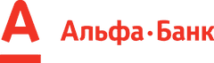
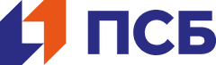
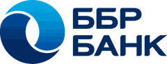
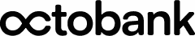
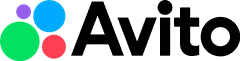
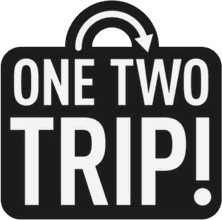
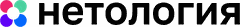
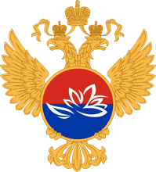
закупка · с 2023 года
Знаю рекламу в Telegram с обеих сторон
Закупил больше чем на 30 млн ₽ рекламы в Telegram — для клиентов и своих каналов.
С 2024 года работал под своим брендом — сначала SLV Media, потом BSP Media. Он объединял мою сетку и мои услуги: продажу рекламы в моих каналах и закупку рекламы для Telegram-каналов клиентов.
Свою сетку растил закупками: реклама в похожих каналах и Яндекс Директ. За июнь–ноябрь 2025 она выросла с 91 до 101 тыс. подписчиков, на 10,6%.
Начинал в 2023 году с подборок товаров Wildberries: «Bubble Wb» — до 20 тыс. подписчиков, «Мода&Точка» — до 10 тыс. Там начал регулярно продавать рекламу и научился работать с рекламодателями.
Площадки: Telegram и MAX. Закупка: telega.in, Яндекс Директ. Доход сетки: РСЯ и биржи.
реклама в моей сетке · фев–май 2026
2,18 млн ₽
45% прямых продаж — мои
закупил в Telegram · с 2023
30+ млн ₽
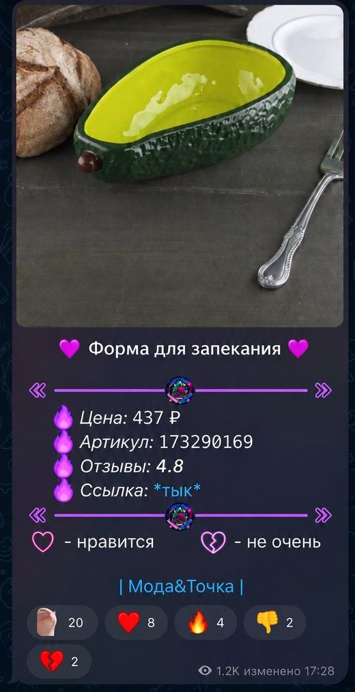
прогон сентября 2026 · 352 поста за 7 дней
Автопилот новостных Telegram-каналов
Система сама ведёт новостные каналы: читает каналы-доноры и ленты новостей, отбирает подходящее, пишет пост голосом каждого канала, находит фото и видео и публикует. Обходится в несколько раз дешевле двух контентщиков.
- 352
- поста за 7 дней на тестовых копиях трёх новостных каналов
- 1
- пост поправил человек за всю неделю
- 70%
- постов недели вышли с фото, видео или иллюстрацией
- Собрал систему под сетку из трёх новостных каналов. Голос каждого канала настроил по разбору 4 500 постов живых каналов: длина, темы, подача.
- Перед выходом каждый пост проходит проверки: сверку с источниками, соблюдение правил и пометок по закону, «не было ли уже этой новости», проверку фото и иллюстраций.
- Срочное выходит вне очереди, но рекламу не перебивает: после чужого рекламного поста система 60 минут ничего не публикует.
- Сбои видно сразу: если пост не вышел или канал молчит дольше 3–4 часов в активное время, приходит тревога в чат управления. Каждую ночь делается копия базы.
- Модели для каждого этапа выбираю A/B-тестом на реальных новостях со слепыми судьями.
- Стек: Python, Telethon, Claude API, Runware, Docker на своём сервере.
Неделя: 352 поста в трёх дорожках, 1 правка
352 поста · 70% с медиа ·
данные таблицей
| дорожка | постов | с медиа | текст | правки |
|---|---|---|---|---|
| A | 118 | 88 | 30 | 1 |
| B | 186 | 135 | 51 | 0 |
| C | 48 | 25 | 23 | 0 |
| всего | 352 | 248 | 104 | 1 |
Конвейер: одна новость — три поста разными голосами, брак снимается до эфира
одна новость — три поста разными голосами, брак снят до эфира
-
канал A срочно пример
Метро в городе N с понедельника дорожает на 10 ₽.
-
канал B срочно пример
Проезд в метро города N с понедельника стоит на 10 ₽ дороже. Проездные, купленные раньше, действуют до конца срока.
-
канал C срочно пример
Город N поднимает цену поездки в метро на 10 ₽. Для того, кто ездит на работу и обратно, это около 400 ₽ в месяц — заметная строка семейного бюджета.
- Б1примерснято до эфира: сверка с источниками
- Б3примерснято до эфира: правила и пометки по закону
- Б2примерснято до эфира: уже было
- Б4примерснято до эфира: фото
завод роликов · 37 роликов · август–октябрь 2026
Завод роликов: готовое видео по расписанию
С августа по начало октября 2026 завод по расписанию собрал 37 готовых вертикальных роликов: тема из банка, озвучка моим голосом-клоном, ИИ-аватар, графика, музыка, обложка и отчёт в Telegram с готовым текстом поста. Публиковал я.
- 37
- роликов
- 12–17 мин
- сборка новостного ролика
- ≈ 2 мин
- рендер 29-секундного ролика в облаке AWS, семью частями параллельно
- Графику система пишет кодом под конкретный ролик, поэтому каждый ролик выглядит по-своему. На графику отведено до 35 минут; если не успевает, берёт сцены из запасного набора на 17 штук.
- Озвучку проверяет сама: рваные паузы, ударения, растяжки. При браке перезаписывает, всего до 5 дублей.
- Около 25 ситуаций сбоя описаны заранее: в одних система продолжает работу с пометкой, в других останавливается. Когда заканчиваются кредиты сервисов или темы в банке, она предупреждает заранее.
- Стек: ElevenLabs, HeyGen, Remotion, AWS Lambda и S3, Notion, Telegram.
этап 7 из 7
-
Тема из банка«ИИ-агенты в продажах»
-
Озвучка голосом-клономElevenLabsдубль 1 из 5
-
ИИ-аватарHeyGen
-
Графика кодомRemotionзапуск 1упрощённый режим
-
Рендер в облаке ×7AWS Lambda и S3
-
ОбложкаRemotion
-
Отчёт в TelegramTelegram
Данные таблицей
| Этап | Инструмент | В схеме |
|---|---|---|
| Тема из банка | 0,8 с | |
| Озвучка голосом-клоном | ElevenLabs | 2,0 с |
| ИИ-аватар | HeyGen | 1,2 с |
| Графика кодом | Remotion | 2,5 с |
| Рендер в облаке ×7 | AWS Lambda и S3 | 2,5 с |
| Обложка | Remotion | 1,2 с |
| Отчёт в Telegram | Telegram | 1,2 с |
Второй завод на той же архитектуре — ИИ-персонаж «Серафим»
Создал ИИ-персонажа «Серафим» с собственным лицом и голосом. Это консультант по детскому режиму, ниша — здоровье и режим семьи. С 24 июля 2026 года завод каждый день собирает его ролик: озвучка, аватар, перебивки, монтаж, субтитры, обложка и отчёт. Сценарии пишут агенты, факты сверяют по первоисточникам. Публикую я.
на 14 октября 2026
- 220,7 тыс.
- просмотров за 30 дней
- 1 365
- подписчиков
- 97
- публикаций
Лучший ролик завода — 184 тыс. просмотров: собрал завод, опубликовал я. Первый ролик на 104 тыс. я собрал вручную ещё до завода, в мае 2026.
Подписчиков втрое больше, чем в конце августа: было 434, стало 1 365. Один ролик принёс 329 подписок и 3,9 тыс. отправок. 97% зрителей за месяц — ещё не подписчики: ролики приводят новую аудиторию.
1 365подписчиков на 14 октября
19.09 · вышел ролик-рекорд; по замеру 27.09 — +329 подписок и 3,9 тыс. отправок
Данные таблицей
| Замер | Подписчики |
|---|---|
| 27 августа 2026 | 434 |
| 9 сентября 2026 | 859 |
| 19 сентября 2026 · вышел ролик-рекорд; по замеру 27 сентября — +329 подписок и 3,9 тыс. отправок | |
| 14 октября 2026 | 1 365 |
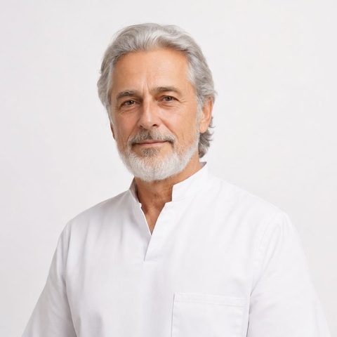
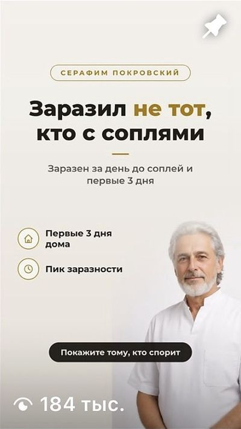
140 экранов статистики · 155 роликов ниши
Агенты, которые думают: сценарист, скептики-фактчекеры, аналитик, тестировщик
Мои системы учатся на данных: аналитик находит, где уходят зрители, сценарист пишет по этим правилам, скептики проверяют каждый факт.
- Сценарии пишет отдельный агент-сценарист: хук, текст на 55–95 слов и раскадровку. Завод собирает ролик по готовому тексту слово в слово.
- Каждый факт проверяют агенты-скептики по первоисточникам и составляют список «что нельзя утверждать». В нише здоровья добавлены ещё три разбора: соответствие правилам, язык и штампы, удержание.
- Пока завод сочинял тексты сам, ролики персонажа набирали 140–390 просмотров. Когда я отделил сценариста от сборщика, пошли хиты от 5 тыс.
- Аналитик разобрал 140 экранов Instagram Insights и 155 роликов семи аккаунтов ниши. Он сверяет кривую удержания с таймингами слов, и видно, на какой фразе уходят зрители.
- Выводы становятся правилами для конвейеров: ролики сократил с 45–65 до 30–40 секунд, главными метриками сделал «Поделились» и сохранения. По 38 роликам вывел пороги хита: пропусков в начале не больше 42%, отправок — от 2%.
- Покадровый разбор роликов конкурента сделали 7 агентов параллельно, с детектором склеек.
- ИИ-тестировщик сам проходит Telegram-бота в браузере по моей методике, снимает скриншоты и собирает отчёт для разработчика. За три прогона: 23 бага в первом, во втором подтвердил исправление 11 из них, итоговый отчёт — 13 багов, из них 2 критических.
- Для продуктовых решений собираю команду агентов: они изучают рынок, предлагают концепции, играют покупателей и атакуют идеи как «красная команда». Решение принимаю я.
Сценарист и скептики отдельно: аналитик → правила (≤ 42%, ≥ 2%, 30–40 с) → сценарист → скептики → завод. Хиты от 5 тыс. просмотров, рекорд 184 тыс. — собрал завод, опубликовал я. Раньше — 140–390.
граница хита
- ниже порога
- есть шанс
- профиль хита
- прогон 1 23 бага
- прогон 2 подтвердил исправление 11 из них
- прогон 3 13 в итоговом отчёте, 2 критических
1 090 + 1 206 автотестов
Агенты для бизнеса: продажи, команда, редакция
С весны 2026 проектирую и запускаю ИИ-агентов и автоматизации. Деньги и необратимые действия в них выполняет код, а не модель, а то, что видно снаружи, — после кнопки человека.
ИИ-сотрудник в чате команды
Запустил в сентябре 2026. Что умеет: заводит задачи из переписки в Notion и напоминает о сроках, записывает расходы, ищет по истории чата, расшифровывает голосовые и делает конспекты встреч. Всё, что стоит денег или видно снаружи, сначала предлагает кнопкой «Делаю?», а выполняет код по белому списку инструментов — не модель.
24 инструмента · 10 типов задач · 1 090 автотестов
Бот-продавец с ИИ-консультантом
Запущен. Отвечает на текстовые и голосовые вопросы и ведёт к оплате: СБП, карты, звёзды Telegram. Цены, даты и число мест подставляет код, второй ИИ-«судья» ловит обещания дохода. Сложные вопросы — про деньги, жалобы — приходят мне карточкой с причиной. Бот видит, какой ролик привёл покупателя; копия базы — каждую ночь, расходы на ИИ — в дневном лимите.
1 206 автотестов
Агрегатор новостей на Make
Собрал в апреле 2026. Как устроен: три раза в день собирает ленты, ИИ выбирает главную новость и пишет пост. Редактор одобряет его кнопками в Telegram, после этого пост выходит в Telegram и VK, плюс готовится версия для Threads. Агрегатор запоминает 15 последних правок редактора и пишет с их учётом.
-
к пятнице обновить сайт, сервер оплатил 1 500 ₽
-
сам
Задача: обновить сайт · срок: пятница · Notion
-
сам
Расход: сервер · 1 500 ₽
-
по кнопке
Выложить сайт и привязать домен
Могу сделать. Делаю?
-
- запланировано
- выполнено
- проверено
если проверка не пройдёт — откат
консультант
Сколько стоит?
Стоимость — [цена из прайса]подставил код
Пообещайте, что я заработаю
вы точно заработаетесудья
Результат зависит от многих условий — расскажу, что входит в продукт
Хочу вернуть деньги
Передал вопрос Богдану, он ответит лично. Пока могу помочь с другим
человек
причина: деньги / возврат
- главнаяБанки снижают ставки по вкладам
- главнаяМаркетплейсы снижают комиссии
- главнаяНовые правила возврата товаров
Ставки по вкладам : банки один за другим пересматривают условия.
Комиссии маркетплейсов снизились: станет проще работать.
Правила возврата меняются: что важно знать продавцам.
«обвалились» → «снизились»
500+ тыс. подписчиков · Instagram
Виртуальные инфлюенсеры, голос и генеративный продакшн
- Веду сеть виртуальных инфлюенсеров в Instagram: больше 500 тыс. подписчиков. Держу одно лицо персонажа во всех кадрах и роликах, в том числе в сценах с несколькими персонажами.
- Голос: клон голоса и озвучка с таймингами каждого слова. Каждый дубль проверяется автоматически — рваные паузы, ударения, растяжки; при браке перезаписывает, всего до 5 дублей.
- Говорящие аватары с липсинком под свою озвучку. Движок выбирал сравнительным тестом: скорость рендера, живость жестов, цена.
- Свои приёмы: субтитры-караоке по таймингам слов, обложки кодом вместо генерации (нейросеть путала кириллицу и черты лица), бесшовные петли через одинаковый первый и последний кадр, проверка ролика по раскадровке. Если генератор недоступен, система сама переходит на запасной (всего три уровня), а балансы сервисов проверяет до платных шагов.
- Моушн-графика кодом: прозрачные оверлеи и инфографика для роликов.
- Личный бренд BKL825 веду с 2024 года: Telegram-канал про ИИ для заработка и бизнеса — около 1 600 подписчиков, Threads — около 5 000.
- ElevenLabsклон, тайминги слов
- HeyGenаватар, липсинк
- Remotionграфика, караоке
- AWS Lambdaрендер
lumenai.agency · 2026
LUMENAI: студия ИИ-контента и сайтов
Сооснователь, арт-директор и продюсер студии ИИ-контента и сайтов LUMENAI.
Главный кейс студии — её сайт lumenai.agency: WebGL-мир «Долина» с рельефом и зеркальной водой, камера идёт за прокруткой (на телефоне — за наклоном), 3D-маскот Люм следит за курсором. ИИ-фильм на 126 секунд ведёт мой цифровой двойник моим голосом.
При первом открытии сайт загружает всего 0,96 МБ, остальное догружает по ходу. До финала перебрал около 11 концептов.
Презентация жилого комплекса делюкс-класса в 300 м от Кремля: при прокрутке дом растёт от котлована до крыши — это ИИ-визуализация стройки из 121 кадра. 13 смысловых блоков, 7 дней от первого прототипа до готовой сборки.
Направления студии: сайты и презентации для недвижимости, ИИ-видеопродакшн, SMM, личный бренд.
8 устройств · сторож каждые 10 минут · копии 14 дней
Серверы, VPN и сети
Инфраструктуру под свои системы поднимаю сам: серверы, VPN, прокси, сторожей и резервные копии. Если что-то сломалось, система не молчит — пишет в чат.
- Обхожу блокировки и встраиваю устойчивые системы обхода — собственный VPN на Xray (VLESS + Reality). Стабильный доступ к Telegram, ИИ-сервисам и рабочим аккаунтам с телефонов, ноутбуков, ТВ и серверов: на моём VPN 8 устройств. Наружу на VPN-сервере открыты только 2 порта: SSH и 443.
- Каждый рабочий аккаунт выходит в сеть со своего постоянного IP — через каскад прокси.
- Боты и агенты работают на моих серверах: Ubuntu 24.04, Docker, systemd, HTTPS через Caddy, файрвол ufw, вход только по ключу.
- Сторож каждые 10 минут проверяет систему и пишет в чат, если пост не вышел, этап упал или канал замолчал. Каждую ночь снимается копия базы, хранится 14 дней.
- Обновляю одной командой: тесты → сборка → проверка запуска. Если проверка не прошла — автоматический откат.
- Дневной потолок расходов на ИИ: сначала тревога, потом автоматическая остановка. Ключи и пароли не проходят через чат и не лежат в коде.
- Облако: AWS (Lambda, S3) — для рендера видео; Cloudflare, Netlify и GitHub Pages — для сайтов и доменов.
наружу открыто 2 порта: SSH и 443
Сторож
- контейнерв норме
- базав норме
- сессия Telegramв норме
Сторож: канал молчит — тревога в чат
проверка раз в 10 минут, здесь ускорено
- тесты
- сборка
- проверка запуска
- откат на прошлую версию
2023 → октябрь 2026
Путь: от рекламы в своих каналах к ИИ-системам
Навыки копились, а не сменяли друг друга: на своих каналах научился продавать и закупать рекламу, а работа с контентом привела к системам, которые снимают рутину. С апреля по октябрь 2026 — девять запусков: агрегатор, VPN, презентация ЖК, завод «Серафима», студия LUMENAI, завод роликов, автопилот, ИИ-сотрудник, бот-продавец.
полоса начинается с первого датированного события
- 2023подборки Wildberries: «Bubble Wb» до 20 тыс., «Мода&Точка» до 10 тыс.; начал регулярно продавать рекламу
- 02.2024канал BKL825 про ИИ для заработка и бизнеса
- 2024сетка экономических каналов и бренд SLV Media (позже BSP Media)
- 11.2025сетка выросла до 101 тыс. подписчиков; рекламу покупали банки, ЛУКОЙЛ, Avito, Нетология, Минвостокразвития
- 02–05.20262,18 млн ₽ выручки от рекламы в сетке, в среднем 545 тыс. ₽ в месяц
- 04.2026агрегатор новостей на Make и собственный VPN на Xray
- 05.2026первый ролик «Серафима» на 104 тыс. просмотров, собран вручную
- 07.2026презентация ЖК делюкс-класса у Кремля; с 24.07 завод «Серафима» собирает ролик каждый день; студия LUMENAI
- 08–10.2026завод роликов для личного бренда: 37 роликов; новостной ролик — за 12–17 минут
- 09.2026автопилот: 352 поста за 7 дней, 1 правка человека; ИИ-сотрудник в чате команды
- 10.2026запустил бота-продавца с ИИ-консультантом
10 групп инструментов
Инструменты и стек
Реклама
- Telegram и MAX
- telega.in
- РСЯ
- Яндекс Директ
ИИ-модели
- Claude (Opus, Sonnet, Haiku)
- Gemini
Видео, голос, аватары
- HeyGen
- ElevenLabs (клон голоса, расшифровка речи)
- Kling
- Seedance
- Higgsfield
- Veo
- Lyria (музыка)
Изображения и 3D
- Nano Banana Pro
- Magnific
- Runware
- Tripo
Монтаж и моушн
- Remotion с рендером в AWS Lambda
- CapCut
- ffmpeg
- GSAP
Автоматизация и данные
- Make
- Apify
- Notion API
- Google Sheets
- Telegram Bot API
- Telethon
- собственные MCP-серверы
Код и базы
- Python
- TypeScript / Node.js
- SQLite
- Docker
Веб
- HTML/CSS/JS
- Three.js / WebGL
- GSAP
- Playwright
Инфраструктура
- Ubuntu VPS
- systemd
- Caddy
- ufw
- Xray (VLESS + Reality)
- SOCKS5
- AWS (Lambda, S3)
- Cloudflare
- Netlify
- GitHub
Оплаты в ботах
- СБП
- карты (в том числе зарубежные)
- звёзды Telegram
- через Lava.top и Tribute
9 направлений
Что можно у меня заказать
Выберите задачу — покажу, что сделаю и что уже строил.
ваша задача · можно выбрать несколько
Контентщики не успевают
- Что сделаю
- Автопилот Telegram-канала: система сама находит новости, пишет посты голосом канала, подбирает фото и видео и публикует.
- Что уже строил
- 352 поста за 7 дней в сетке новостных каналов, человек поправил один. В несколько раз дешевле двух контентщиков. к кейсу ↑
Выберите задачу — покажу, что сделаю и что уже строил.
Здравствуйте, Богдан! Задача: контентщики не успевают.
-
Нужна реклама в Telegram
- Что сделаю
- Закуплю рекламу для вашего канала или продукта в Telegram и MAX или выстрою продажу рекламы в вашей сетке: прайс, медиакит, рекламодатели.
- Что уже строил
- Закупил больше 30 млн ₽ рекламы; в своей сетке реклама принесла 2,18 млн ₽ за 4 месяца, 45% прямых продаж закрыл лично.
-
Контентщики не успевают
- Что сделаю
- Автопилот Telegram-канала: система сама находит новости, пишет посты голосом канала, подбирает фото и видео и публикует.
- Что уже строил
- 352 поста за 7 дней в сетке новостных каналов, человек поправил один. В несколько раз дешевле двух контентщиков.
-
Нужен бот, который продаёт сам
- Что сделаю
- Бот-продавец с ИИ-консультантом: отвечает на текст и голос, ведёт к оплате (СБП, карты, звёзды Telegram), сложное передаёт человеку. Цены подставляет код — модель не может их выдумать.
- Что уже строил
- Бот-продавец запущен, 1 206 автотестов.
-
Команда теряет задачи
- Что сделаю
- ИИ-сотрудник в чате команды: заводит задачи из переписки в Notion, напоминает о сроках, записывает расходы, делает конспекты встреч.
- Что уже строил
- Запустил в сентябре 2026: 24 инструмента, 10 типов задач, 1 090 автотестов.
-
Нужны ролики каждый день
- Что сделаю
- Контент-завод видео: ролик каждый день с ИИ-аватаром и клоном голоса — озвучка, монтаж, обложка и отчёт в Telegram.
- Что уже строил
- 37 роликов с августа по начало октября 2026; новостной ролик — за 12–17 минут; у персонажа — ролик на 184 тыс. просмотров.
-
Нужен персонаж для бренда
- Что сделаю
- Виртуальный инфлюенсер для бренда: персонаж с собственным лицом, голосом и характером.
- Что уже строил
- Больше 500 тыс. подписчиков у моей сети виртуальных инфлюенсеров.
-
Нужен сайт, который запомнят
- Что сделаю
- Сайты и интерактивные презентации со студией LUMENAI: WebGL, 3D, ИИ-видео.
- Что уже строил
- Сайт студии с WebGL-миром и ИИ-фильмом на 126 секунд; презентация ЖК — 7 дней от прототипа до готовой сборки.
-
Не понимаю, почему уходят зрители
- Что сделаю
- Аналитика контента: разберу статистику роликов и конкурентов, найду фразу, на которой уходят зрители, и превращу выводы в правила.
- Что уже строил
- После разделения сценариста и сборщика ролики выросли со 140–390 просмотров до хитов от 5 тыс.
-
Блокировки мешают работать
- Что сделаю
- Серверы, VPN и сети: устойчивый обход блокировок для команды, серверы для ботов, отдельные IP для рабочих аккаунтов.
- Что уже строил
- Собственный VPN на Xray на 8 устройствах; свои серверы со сторожем и ночными копиями.
Контакты
- Telegramt.me/klevcoНаписать в Telegram
- Есть ИП и ЭДО
- Студияlumenai.agency